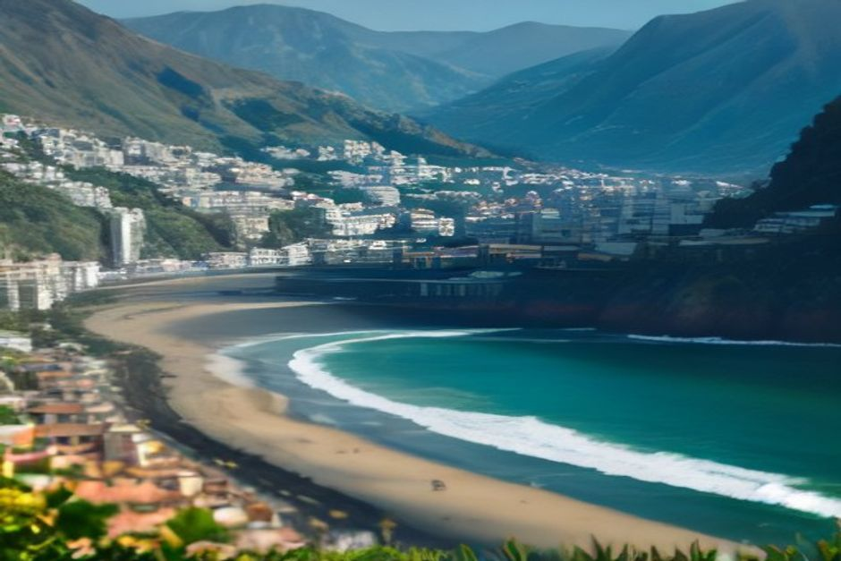

Short answer: yes, comfortably, in every situation a visitor is likely to encounter. Here's the fuller picture — what language Madeira actually runs on, where English is guaranteed, and where it's worth knowing a few words of Portuguese.
Is English widely spoken in Madeira?
Yes. Tourism is Madeira's single largest industry — the island welcomes more visitors each year than it has residents — so almost everyone working in a customer-facing role speaks usable English, and most speak it well. Hotel reception, restaurant staff, museum ticket desks, car rental counters, tour operators and boat crews all operate in English as a matter of course. You won't need to rehearse a phrasebook to get a coffee, book a table or ask for directions in Funchal.

What language do people in Madeira actually speak?
Portuguese — specifically Madeiran Portuguese, a dialect with its own accent, rhythm and slang that even mainland Portuguese speakers sometimes find hard to follow at full speed. Locals speak Portuguese to each other by default, including staff who are perfectly fluent in English with guests. It's a Portuguese island first; English is the second language it uses to serve millions of visitors, not the language of daily life.
Is Madeira Portuguese-speaking or Spanish-speaking?
Portuguese. Because Madeira sits closer to the Canary Islands than to mainland Portugal, some first-time visitors assume Spanish will work — it won't reliably. Spanish is not an official language and isn't taught or used the way English is in tourism. If you don't speak Portuguese, lead with English rather than Spanish; you'll get further.
Will restaurant menus and signs be in English?
In Funchal and every coastal tourist town, yes — menus are printed bilingually (often trilingually, with German or French added), and most signage for attractions, transport and parking includes English. The exception is small, purely local tascas away from the tourist strip, where a menu might be Portuguese-only; staff will usually talk you through it if you ask.
Do taxi drivers, tour guides and boat crews speak English?
Yes, reliably. Anyone licensed to work directly with tourists — taxi and transfer drivers, licensed tour guides, diving and boat operators — needs functional English to do the job, and most Madeiran operators deal with British, German and Scandinavian guests every week. On a private boat trip with Chifbay, your skipper briefs the whole trip in English, from the safety talk to pointing out where the dolphins usually surface.
Will I struggle with English outside Funchal?
Rarely, but it's more variable. In smaller inland villages — the kind you pass through on a levada walk or a drive up to Pico do Arieiro — older residents may have little to no English, and family-run cafés can be Portuguese-only. This is where a smile, patience and pointing at the menu go a long way. Anyone under about 40, or anyone connected to the tourism trade even loosely, will almost always manage.
What Portuguese phrases are actually worth learning?
You don't need fluency — a handful of words cover most interactions and are genuinely appreciated:
- Bom dia / Boa tarde — good morning / good afternoon, the standard greeting
- Obrigado (male speaker) / Obrigada (female speaker) — thank you
- Por favor — please
- Fala inglês? — do you speak English?
- A conta, por favor — the bill, please
Locals notice and appreciate the effort even when they immediately switch back to English to make things easier for you.
Do you need Portuguese to book activities or a boat trip?
No. Every tourism booking channel in Madeira — websites, WhatsApp, phone lines, in-person desks — operates in English by default, since the majority of demand comes from the UK, Germany and Scandinavia. Confirmations, meeting points and instructions are all in English, so there's nothing to translate before you arrive.
Madeira runs its tourism economy in English, but it lives its daily life in Portuguese — and that mix is part of what makes the island feel authentic rather than manufactured for visitors.
Bottom line: book, eat, and get around in English without a second thought, and treat the few Portuguese words you pick up as a nice extra rather than a necessity.